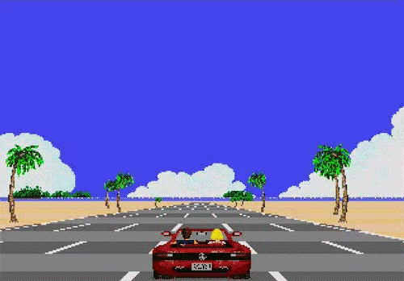
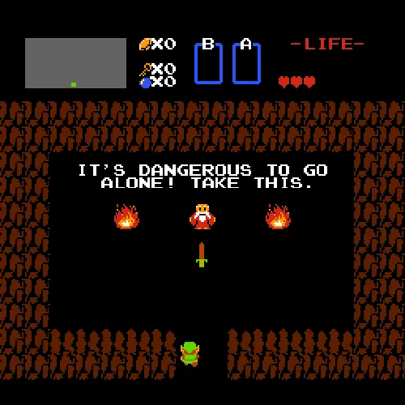
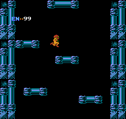
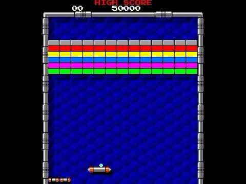
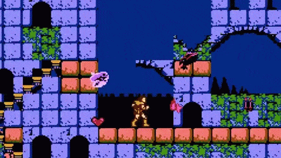

>
Este año fueron lanzados una gran cantidad de grandes juegos que a día de hoy aún se recuerdan, como el Out Run y Wonderboy de Sega, y Arkanoid y Bubble Bobble de Taito.
<

>
Se crea Legend of Zelda, también de la mano de Miyamoto, y lanzado para la NES. La historia se ambienta en la tierra de Hyrule donde un joven llamado Link tiene que rescatar a la princesa Zelda de las garras de Ganon (rey del mal).
El videojuego tenía varias innovaciones técnicas. La más destacada era la posibilidad de guardar los progresos aunque apagaras la máquina. Tuvo muchísima aceptación y llegó a vender 6 millones y medio de copias.
Se convirtió en una de las grandes franquicias de Nintendo.
<

>
Aparece Metroid en NES, Se publicó en Japón durante este año, aunque no llegaría
a América hasta el año siguiente y a Europa al cabo de dos.
Una de las novedades que traía el juego era la inclusión de una protagonista femenina
(Samus Aran). Fue uno de los primeros videojuegos de acción en no tener un
desarrollo lineal. Metroid acabaría convirtiéndose en uno de los
videojuegos insignia de Nintendo.
<

> Taito lanza el mítico Arkanoid. El juego contaba con 33 fases y al final nos
enfrentábamos al enemigo final llamado Doh. La jugabilidad fue revisada
respecto al olvidado Breakout de Atari y ahora nos encontrábamos con que
los ladrillos eran de varios tipos, que algunos soltaban cápsulas para dar mejoras
a nuestra nave, se aumentó el número de bolas, etc.
<

>
Se lanza Castlevania desarrollado por Konami, en primer lugar en Japón bajo el nombre de Demon Castle Dracula para Famicom Disk System.
Sin embargo en Estados Unidos no se conocería hasta el año siguiente, cuando fue reprogramado para correr en la NES, ya bajo el nombre de Castlevania.
<